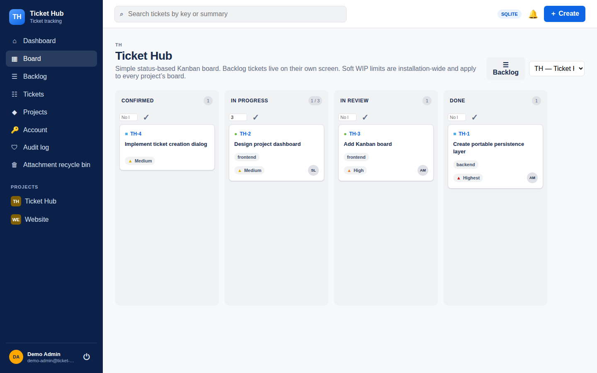

Open source project
Ticket tracking with clear boundaries
A self-hosted tracker for one internal software team. One installation, a straightforward operating model, and source code you can inspect.
Who it is for
Built for team work
Ticket Hub covers software projects, a fixed ticket hierarchy, and a fixed workflow. Project roles determine who can make changes; authenticated users can browse active projects.
A self-hosted installation gives administrators control over accounts, the database, attachments, and deployment. Optional anonymous read access is off by default.

Technical foundation
Few layers, clear responsibilities
The server is a modular monolith. Domain rules and application operations are separated from database adapters and HTTP routes.
- Server
- C++20 and Crow
- Web application
- HTML, CSS, vanilla JavaScript
- Databases
- PostgreSQL and SQLite
- License
- MIT
Current scope
Know what is included
Ticket Hub includes Kanban, a backlog, fixed roles and workflow, Markdown, attachments, a REST API, and administration tools. Post-V1 additions include custom fields, outbound webhooks, and optional SMTP delivery.
It does not offer Scrum sprints, a configurable workflow, OIDC sign-in, or a SQLite-to-PostgreSQL migration tool. The repository documents the current features and operational limits.
These pages summarize the project. For deployment and administration, follow the current README and deployment guide.
Source code
Explore Ticket Hub on GitHub.
Implementation, tests, documentation, and decision history are in one repository.